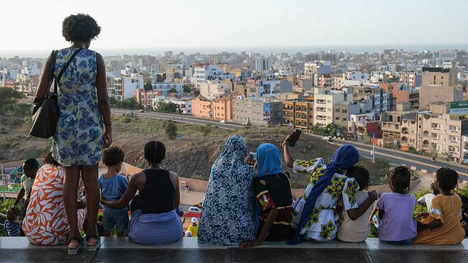
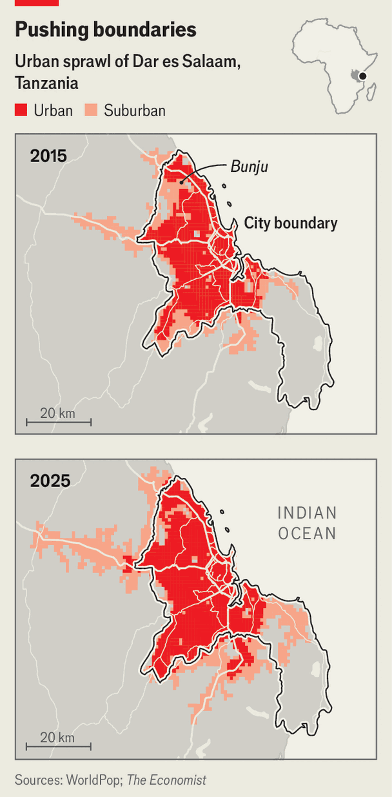

为理解这一时刻，并纪念250周年纪念，本刊重走法国贵族亚历西斯·德·托克维尔（Alexis de Tocqueville）的足迹。这位19世纪30年代游历美国的学者，其见闻成为《民主在美洲》一书的素材，这部著作至今仍为研究共和国制度的宝贵财富。如果你收听我们的播客，会发现今天的许多美国人仍延续着建国者的忧虑。他们担忧权力分立正演变为白宫独揽大权的局面。国会本应是政府的主导部门，但如今却陷入恶性党争，"我们"正确，"他们"邪恶。立法需要妥协，但政党惩罚折中，选区划分奖励极端立场。最高法院正进一步强化行政部门的权力。■
原题：America should not imprison frontier AI · 板块：Leaders · 栏目：领导人
新规则往往源于灾难。美国联邦储备系统（Federal Reserve）的成立源于1907年恐慌事件（Panic of 1907），当时股市暴跌一半。记者如厄普顿·辛克莱（Upton Sinclair）的推动催生了食品药品监督管理局（Food and Drug Administration）。证券交易委员会（Securities and Exchange Commission）则诞生于大萧条时期。人工智能尚未引发灾难，但可能即将发生。像Anthropic的Mythos和OpenAI的GPT-5.6 Sol这样的模型堪称卓越的黑客，可能成为生物恐怖分子的得力顾问。理所当然，特朗普政府试图在灾难降临前对这项技术进行监管。
这使他能够在遵守规则的前提下，敢于承担有计划的风险，发挥创造力，并聘请了一批硅谷的顶尖人才。很少有政府能负担得起支付顶尖技术人员与私营部门相当的薪酬。不过，他们或许可以通过声望、权力和爱国情怀吸引人才，正如印度通过阿迪haar（Aadhaar）项目所做的那样。然而，印度未能汲取该项目成功经验。需要改革的并非构建IT系统的规则本身，而是这些规则所处的文化环境。这一点毋庸置疑。■ Subscribers to The Economist can sign up to our Opinion newsletter , which brings together the best of our leaders, columns, guest essays and reader correspondence.
§013巴西人疯狂追捧中国品牌 中国在拉美
原题：Brazilians are going gaga for Chinese brands · 板块：China · 栏目：中国
2024年4月，卢拉政府（Luiz Inácio Lula da Silva）被指控解雇一名劳工部官员，因其将比亚迪（BYD）列入被指存在奴隶式劳动条件的雇主名单（政府称此举仅为例行人事变动）。2024年巴西警方解救了超过160名中国工人，这些工人被带到巴伊亚州为比亚迪建厂，发现他们居住在条件恶劣且工资低廉的贫民窟中。比亚迪称对此毫不知情，将责任归咎于分包商，并表示已整改。普通巴西人也逐渐亲近中国，他们日益将中国视为全球顶级科技强国。■
为重振香港的经济活力，特区政府正将投资重点拓展至购物以外的“体验”领域。故宫博物院便是成功案例之一。启德球场（Kai Tak Stadium）于2025年启用，可容纳5万人，位于香港前机场旧址。该球场近期刚举办韩国女子组合i-dle的演唱会，即将迎来曼城与国际米兰的季前友谊赛。截至2026年，访港内地游客数量同比上涨16%，但仍比2019年抗议前的峰值低25%。史丹利（Stanley）如同古埃及人般，将希望寄托于猫咪。当贝西湾（Beesy Bay）的本地餐厅生意下滑时，便委托绘制了一幅壁画，用于该餐厅标志性的黄色建筑。■
总统总体上似乎对法院的工作感到满意。他在社交媒体上写道：“共和党人受到了非常公正的对待。”仅在过去一周，法院就维持了禁止跨性别运动员参赛的禁令、放宽了竞选资金管制规则，并扩大了总统的行政权力。现在有传言称，法院六名保守派大法官之一的萨缪尔·阿利托（Samuel Alito）可能于今年夏天辞职。如果他真的辞职，特朗普——这位在任期内已任命三名大法官的总统——将有机会进一步巩固其对法院的深远影响。在所有判决中，特朗普最得意的莫过于“特朗普诉斯劳特案”（Trump v Slaughter）。数十年来，保守派一直主张宪法将全部行政权力赋予总统，而非部分授予半独立的官员以规避政治控制。6月29日，法院最终采纳了这一观点。■
最高法院以6比3的投票结果推翻了一个90年的先例，裁定总统可随时解雇独立机构的委员。特朗普称此裁决为“过去100年里总统权力的最大提升”。在异议意见中，索尼娅·索托马约尔（Sonia Sotomayor）大法官——以从席位上宣读异议意见的罕见方式表达不满——联合其自由派同僚凯坦吉·布朗·杰克逊（Ketanji Brown Jackson）和艾琳娜·卡根（Elena Kagan）指出，多数派的立场在历史或先例中“几乎没有支持”。她指责多数派用“不成熟的理论”取代了数十年的既定实践，并认为此裁决将颠覆那些基于某些决策应由跨党派机构独立作出的监管机构。异议者还警告，此举可能带来更广泛的负面影响。■
根据临时保护地位（TPS）政策，来自被认定为不安全国家的移民可继续留在美国。在该案中持异议的大法官金加恩（Kagan）指出，多数意见忽视了特朗普的言论，仅因他选择取消资格的对象并非“明显种族主义”而得出结论。她指出特朗普曾声称海地移民“正在毒害国家的血液”。即便在特朗普诉巴芭拉案（Trump v Barbara）——即出生公民权案件中，裁决结果也比预期更接近。尽管裁决结果为6比3，但布雷特·卡瓦诺大法官（Brett Kavanaugh）仅基于法律条文同意该裁决，使得仅剩五位大法官坚持认为第十四修正案的原意是“所有在美国出生或归化、且受美国司法管辖的人，均为美国公民”。乔治城大学法学院教授斯蒂芬妮·巴克莱（Stephanie Barclay）指出，特朗普任命的三位大法官在巴芭拉案中意见分歧。■
总统对史密森尼学会强调“奴隶制有多糟糕”表示特别不满。史蒂文森的项目不受这种压力影响——因为他从事与政府对簿公堂的诉讼工作，从未接受过州或联邦政府的任何资金。雷德指出，“指出真相并不等于指责他人”。当被问及蒙哥马利如今对游客代表什么时，他表示：“持久的爱国主义”。 ■ 关注美国政治动态，请订阅《美国简报》（The US in brief），这是一份每日提供重要政治新闻快速分析的简报；以及《制衡》（Checks and Balance），一份每周分析美国民主现状及选民关切议题的专栏。
§021唐纳德·特朗普的镜面池塘丑闻是美国的礼物 美国
原题：Donald Trump’s reflecting-pool debacle is a gift to America · 板块：United States · 栏目：美国
即使特朗普先生暂时解决了他之前的问题，水池的深层缺陷，比如漏水的管道，仍将存在。也许对这场闹剧的关注会促使未来的某一代人直面真正的难题。与此同时，无论水的颜色如何，它仍继续映照着天空和纪念碑的辉煌。无论如何，即使暂时掌权者陷入混乱，这套机制仍能运转。■ Subscribers to The Economist can sign up to our Opinion newsletter , which brings together the best of our leaders, columns, guest essays and reader correspondence.
§022承诺的改革或可彻底改变古巴
原题：Promised reforms could change Cuba radically · 板块：Americas · 栏目：美洲
原题：Africa’s new middle class is putting down roots in the suburbs · 板块：Middle East & Africa · 栏目：中东与非洲
坦桑尼亚最大城市达累斯萨拉姆（Dar es Salaam）郊区的奔朱（Bunju）展现出新非洲郊区的诸多特征。这里的房屋混合了完工、半完工和尚未动工的建筑。尽管政府尚未铺设道路，但企业已纷纷入驻。这里设有英语私立学校、宠物店、水上乐园、健身房和药店。然而，奔朱仍保留着作为农田的痕迹：玉米地里堆着砖块，男孩们攀爬棕榈树摘椰子，沿主路叫卖。


非洲本就城市化程度较高，但其城市化进程速度远超世界其他地区。据由OECD（经济合作与发展组织）下属的萨赫勒与西非俱乐部发起的Africapolis预测，到2050年，非洲拥有1000万人口以上超级城市的数量将从目前的3座增至17座，仅次于亚洲，成为全球城市化最迅猛的大陆。这些城市包括达累斯萨拉姆（Dar es Salaam），其人口将从690万激增至1560万（见地图）。大部分增长将超出现有城市边界，因为城市正在吸纳曾经的农村地区。这些并非西方典型的郊区，一种独特的非洲郊区形态正在形成，并重塑整个大陆。据Africapolis统计，21世纪初非洲城市人口首次超过农村人口，成为主要人口聚集区。该机构将任何至少聚集1万人的区域定义为城市。■
城市扩张的过程如同墨渍在纸上晕染开来（见右图）。我们还发现，在这类城市中，城市核心区（人口增长44%）和郊区（人口增长41%）的人口增长速度相近。在达累斯萨拉姆（Dar es Salaam），郊区人口在过去十年增长了54%，高于非洲郊区的平均增速。其他快速扩张的郊区包括塞内加尔首都达喀尔（Dakar）、加纳第二大城市库马西（Kumasi）、埃塞俄比亚的哈瓦萨（Hawassa）以及尼日利亚北部的卡诺（Kano）。非洲中产阶级正在边缘地区形成。一个案例研究是位于邦朱（Bunju）以南的萨利萨拉（Salisala），由伦敦政治经济学院（LSE）的克莱尔·梅瑟（Claire Mercer）评估。她在著作《郊区前沿》（The Suburban Frontier）中指出，该地区与发达国家郊区共享一些特征，例如对汽车的依赖。■
与西方郊区不同，西方郊区通常由地方市政厅在建房前就规划并连接到服务设施，而像萨利萨拉（Salisala）这样的地方则属于“自建郊区前沿”。在达累斯萨拉姆（Dar es Salaam）的郊区，土地往往通过灰色市场从非正式经纪人手中购买，许多经纪人会预测城市未来的扩张。房屋建设往往持续多年，断断续续地进行，直到资金到位。这种情况在撒哈拉以南非洲地区尤为典型，世界银行估计，过去一年中仅有5%的成年人办理过房贷，其中许多来自南非。非洲城市正不断向外围扩张。一份即将发布的世行报告预测，从2025年至2050年，撒哈拉以南非洲城市的实际面积将增长90%，略快于人口预计85%的增长速度。这一预测可能低估了实际扩张幅度。■
然而，当《经济学人》杂志出版时，这些媒体机构的办公地点仍被士兵占据。卡内鲁加巴将军最初表示，这两家媒体机构均隶属于总部位于肯尼亚的国家媒体集团（Nation Media Group，简称NMG），并称其将“永久关闭”。他后来表示，如果这些媒体机构改变其行为，他将允许它们重新开放。7月1日，卡内鲁加巴将军与NMG的创始人罗斯塔姆·阿齐齐会面。一家亲政府报纸报道称，他们讨论了“政府认为存在偏见和恶意报道”的内容。据将军称，谈判仍在继续，结果将提交给乌干达总统穆塞韦尼进行“最终审批”。或许，问题就出在这里：卡内鲁加巴将军是穆塞韦尼总统的儿子。自1986年以来，穆塞韦尼总统一直统治乌干达，如今年事已高。随着父亲的精力逐渐衰退，儿子正积极争取接班人的位置。■
美国在2019年阻止了土耳其购买俄制S-400防空系统的交易。但特朗普表示可能撤销这一决定。6月24日，他称美国正在重新审视此事，并称“我可能会做些让他非常高兴的事”，指的是埃尔多安。一些分析人士认为以色列的最新行动与F-35战机有关，且内塔尼亚胡的意图对象是美国国会。“以色列人知道特朗普正准备实现F-35战机突破，”美国近东政策研究所（Washington Institute for Near East Policy）的索内·卡加帕泰（Soner Cagaptay）表示，“他们想提前阻止这一进程。”双方虽未彻底断绝关系，土耳其在特拉维夫设大使馆，以色列在安卡拉设大使馆，尽管两国均于2023年召回了大使。■
6月29日，伊朗外长发言人表示，直至备忘录（MoU）完全实施——包括黎巴嫩相关内容——才可能展开直接对话。当该备忘录签署时，美国官员曾对美伊关系的新时代充满期待。但两周后，如今看来，一切仍如往常。■ 注册订阅《中东简报》（Middle East Dispatch），每周获取关于这个复杂且举足轻重地区的重要动态。
§030欧洲会议：乔丹·巴德拉，法国可能的总统
原题：Meeting Jordan Bardella, France’s possible president · 板块：Europe · 栏目：欧洲
7月7日，事态可能再次出现转折：玛丽娜·勒庞（Marine Le Pen）将得知上诉法院是否维持对其滥用欧盟资金的禁令，禁止其参选。若禁令成立，明年4月，巴德尔（Mr Bardella）将成为国民联盟（RN）的法国总统候选人。"我从未想过自己会走到今天这一步，"巴德尔在欧洲议会的咖啡馆里沉思道，他目前是国民联盟议员。他坦言，少年时期"不可能"有过这样的想法。当时他"非常害羞"，整日待在卧室里玩《使命召唤》（Call of Duty）或《FIFA》游戏。他没有就读培养法国精英的学校，也未完成大学学业。在巴黎上流社会的同龄人中，他因工人阶级出身的名字而被嘲笑："我虽成长于巴黎边缘十分钟路程的地方，但那是截然不同的世界。"■
巴德拉（Bardella）在国民联盟（RN）内部的晋升速度令人咋舌：16岁成为党员，18岁成为地方记者，23岁担任欧洲议会选举名单负责人，27岁当选RN主席。勒庞女士（Le Pen）——该党联合创始人让-马里·勒庞（Jean-Marie Le Pen）之女——将他视为接班人，并在极年轻时便提拔他。如今的巴德拉已成为政坛明星，甚至与博尔博纳-两西西里王朝（Bourbon-Two Sicilies）的前王室成员公主交往。民调显示，若勒庞女士的禁令得以维持，巴德拉作为候选人，将在首轮投票中以压倒性优势领先，甚至可能赢得最终决选。从某种角度看，巴德拉对政党的吸引力显而易见：他是这个曾因反犹太主义而备受唾弃的政党寻求正名之路的“光鲜面孔”。关键的是，他并不背负勒庞家族的姓氏；更幸运的是，他出身法国最贫困的邮政编码le 93。■
所有内阁达成的法案都必须经议会审议通过：联合政府在联邦议院仅有的12席多数意味着成功前景并不明朗。更严重的是，9月东德地区选举可能首次让德国另类选择党（AfD）在州级政权中掌权，这将对既定秩序造成冲击。德国官员长期认为，该党缺乏明确政策纲领的成功，部分源于民众对政府无法推进任何实质性工作的不满。这一说法如今将面临检验。■ To stay on top of the biggest European stories, sign up to Café Europa , our weekly subscriber-only newsletter.
国际战略研究所（International Institute for Strategic Studies）智库的鲁本·斯图尔特（Ruben Stewart）在近期论文中指出，欧洲军队在多个领域与俄罗斯的实力相当甚至更胜一筹。但美国仍是北约的“操作系统”，包括情报、监视无人机和卫星、远程武器、防空系统和空中运输能力。斯图尔特认为，若没有美国，“最关键消失的并非数量，而是整合能力”。欧洲军队将不得不“更加谨慎、更加有计划地作战”。他们对俄军调动的预警将减少，方向判断也更不确定，因此兵力部署将更加分散。各军种间的协同作战能力将减弱，因卫星信号、通信和数据传输的可靠性下降，空降部队与地面部队将主要各自为战。■
在成功吸引英国驾驶者离开福特和丰田后，中国品牌现在正试图将他们从保时捷手中夺走。深圳的比亚迪（BYD）作为一家起家于电池制造的巨头，正率先发起攻势，推出两个豪华品牌。腾势（Denza）曾与梅赛德斯-奔驰（Mercedes-Benz）合资，但自2024年起已完全归属比亚迪所有，将于7月9日开幕的古德伍德速度节（Goodwood Festival of Speed）上向英国买家展示其D9和Z9 GT车型。更高端的仰望（Yangwang）品牌，对标法拉利（Ferrari）等豪华品牌，可能于明年跟进。比亚迪并非孤军奋战。吉利（Geely）去年才推出售价3.2万英镑（4.2万美元）的EX5 SUV，计划在英国推出其高端品牌Zeekr，与极氪（Polestar）和小鹏（Xpeng）共同组成中国阵营，挑战宝马（BMW）和奥迪（Audi）等传统豪华品牌。
取而代之的是，六艘新型通用战斗舰艇（CCVs）将加入13艘新型Type 26和五艘更便宜的Type 31护卫舰，共同构成水面舰队的骨干力量。这些CCVs将作为指挥中枢，控制由多艘大型（最大达90米）自主作战舰艇组成的分散编队。部分舰艇将配备导弹，另有部分将用于反潜作战或作为传感器平台。即便参与构想混合舰队的高级军官也承认，这种激进的变革将令传统主义者震惊，且绝非没有风险。国际战略研究所（International Institute for Strategic Studies）的海权专家尼克·奇尔兹表示，这是一场经过计算的冒险，部分反映了海军在传统平台建设上已落后多远，以及其在招募船员方面面临的困难。
或许对伯恩哈姆刻意彰显的北方特质最有力的辩护，恰恰来自于人们对这种表演式北方性的反应。由此，他对国家的诉求也因此更加清晰：每个锅里都有鸡，每个肩膀上都有傲气。那么伯恩哈姆又能向搭乘伊丽莎白线、乘着崭新空调列车疾驰前往全国最繁荣地区工作的上班族提供什么呢？最珍贵的礼物莫过于怨愤。■ The Economist订阅者可注册我们的观点通讯，汇集本刊最佳评论员文章、专栏、特稿及读者来信。
§043盟友正学习如何逼迫美国
原题：Allies learn how to bully America · 板块：International · 栏目：国际
高盛集团（Goldman Sachs）的米歇尔·德拉维尼亚（Michele Della Vigna）估计，过去数十年中，交易活动对欧洲主要企业的资本回报率贡献约为1个百分点，而如今这一数值已升至2个百分点，今年可能达到3个百分点。更引人注目的是这些利润的韧性。在其他交易领域，运气终将耗尽，投机者最终会亏损。但欧洲主要企业的交易部门却“极少亏损”，德拉维尼亚表示——他们只是在较差的年份赚得较少。这源于三大要素：灵活的架构、专业的团队以及在关键时刻能下大注的资金实力。首先看架构。交易部门并不公开组织架构图。只有英国石油公司（BP）明确公开了负责人：其副首席执行官卡罗尔·豪尔（Carol Howle），这一举措清晰表明交易业务在公司中的核心地位。■
原题：Can Bending Spoons thrive as a listed company? · 板块：Business · 栏目：商业
“我喜欢留下印记的想法，”卢卡·法里埃里（Luca Ferrari）在4月接受《晚邮报》（Corriere della Sera）采访时说道。他是意大利科技公司Bending Spoons的创始人兼CEO，该公司专门收购并复兴表现不佳的应用程序，如笔记服务Evernote和票务网站Eventbrite。法里埃里的野心远不止于复兴软件公司。他表示，希望通过打造一家“国际化水准”的企业，来改变意大利低迷的商业文化。其公司实力的考验在7月1日到来。
判决出炉之际，监管不确定性正不断上升。以Gojek（印尼）为例，该公司在2021年与电商平台Tokopedia合并后更名为GoTo，如今正面临政策的不确定性。例如，一项限制网约车佣金上限为8%（此前为20%）的计划，自7月1日起生效，而该政策的意外宣布仅两个月前。但两项轮子交通工具的新规是否适用于四轮车辆，仍存疑问。曾被视为印尼罕见的科技领军企业，GoTo的股价如今陷入印尼股市价格下限50印尼盾的低迷，不久后其创始人也将面临牢狱之灾。■ 要追踪塑造商业、产业与科技趋势的动态，订阅我们的周度专属简报“ The Bottom Line ”。
Lime同样也承受着小政治带来的巨大后果。2023年巴黎投票决定禁止无桩电动滑板车。各州自行制定安全规则，自行车牌照可下放到荒谬程度。伦敦32个区各自制定规则，导致同一运营商的自行车在边界堆积成山。荒诞景象，却日益常见。■ The Economist订阅者可注册我们的Opinion新闻简报，汇集最佳领袖评论、专栏文章、特稿及读者来信。
§051今年的七夕烧烤派对要花多少钱
原题：How much will a 4th of July cookout cost this year? · 板块：Finance & economics · 栏目：财经
预算与政策优先事项中心（Centre on Budget and Policy Priorities）这家左翼智库估算，自去年7月该法律实施以来，参与人数已减少超过400万。因此，低收入家庭获得的食品援助减少。与此同时，薪资增长放缓，使得工资收入难以追平物价。然而这一切都无法阻止美国人于7月4日聚集在烧烤架旁。他们或许会少准备一些肉类，花更多时间工作以支付开销，若居住在城市中心以外地区，还可能花费100美元为福特F-150皮卡加油，以抵达杂货店。然而美国的丰饶依然会全面展现：手持烟花、冷藏箱装满贝德斯啤酒、餐桌堆满（不只是生菜）。曾目睹这般富足景象的Updike曾称美国为“一个旨在让你幸福的巨大阴谋”。这个阴谋或许变得更昂贵了。■
但若现代的索罗斯追随者希望重演当年的辉煌，恐怕会大失所望。要缔结一项新协议以强化全球似乎被低估的货币，如今的难度远高于四十年前。即便达成协议，其效果也可能远不如当年。原因之一在于当前外汇市场的规模。1985年纽约广场饭店会议的五国外汇储备金已从1320亿美元（当时占其集体GDP的不足2%）增至1.9万亿美元（约占4%）。但与外汇交易规模的激增相比，这点增长显得微不足道。1986年，国际清算银行（Bank for International Settlements）首次发布全球外汇市场调查报告时，估计日均交易额约为2000亿美元。到2024年，这一数字已飙升至12万亿美元，增长了60倍。■
这不会是件容易的事。此次重组将是历史上规模最大的之一。按名义价值计算，委内瑞拉政府与国家石油公司PDVSA的债务总和，可与2012年违约2600亿美元债券的希腊相提并论。相比之下，这些债务占GDP的比例是希腊的两倍。这笔债务重组方案也颇具特殊性。涉及的债权人阵容可谓五花八门。且不涉及国际货币基金组织（IMF）——通常在主权债务重组中扮演核心角色。牛津能源研究所（Oxford Institute of Energy Studies）智库学者奥兰多·奥乔亚（Orlando Ochoa）指出：“二十年的行政体系衰败已耗尽了参与国际金融谈判所需的专业人才。”取而代之的是，政府正支付华尔街投行Centerview Partners（据报为1.5亿美元）代为谈判。■
委内瑞拉债务人能追回多少资金，取决于新领导层能否在多大程度和多快的速度上恢复这个崩溃的经济。目前经济已濒临崩溃。2012年至2025年间，GDP缩水了三分之二。但关于经济实际状况的细节却十分匮乏。国际货币基金组织（IMF）每年发布成员国经济分析报告，但自2004年后，其对委内瑞拉的分析报告就再未更新。该机构于2019年完全暂停与政府的合作，直到今年4月才恢复。债权人最大的安慰来自石油行业。摩根大通银行（JPMorgan Chase）和美国外交关系委员会（Council on Foreign Relations）的估计显示，最多200亿美元的投资可能在数年内将委内瑞拉石油日产量提高50万桶（b/d），达到约150万桶。■
例如，英格兰银行（Bank of England）提议稳定币的储备中，30%应存入央行存款，7、0%则需持有短期国债。Circle公司首席执行官杰里米·艾勒（Jeremy Allaire）表示，这种全额担保意味着“稳定币比银行货币安全得多”，而后者仅有极少部分得到此类储备保障。（不过在欧盟，稳定币的最低比例必须存入银行存款。）关于访问央行设施的规则也存在差异。英国正在考虑设立最后贷款人机制，而美国则打算将此类设施保留给传统银行（尽管美联储可能为非银行发行人提供支付结算账户）。欧盟则不提供央行支持。所有这些安排是否让稳定币成为法定货币？其发行方无疑会表示肯定；但银行（及大多数经济学家）大概率会持不同意见。然而更关键的问题是，这些安排是否会让稳定币更广泛地被使用。
服务行业因司机需求而繁荣，包括加油站、餐厅和汽车旅馆，沿途的小城镇也因这条路线而兴盛。但仅有一条双向车道，这条热门路线最终变成了停车场。德怀特·艾森豪威尔（Dwight Eisenhower），时任美国总统，在第二次世界大战期间驻欧时曾对德国的高速公路（Autobahn）印象深刻。1956年，他签署《联邦资助公路法案》，为建设多车道州际公路系统提供资金。随后的几十年里，一些新高速公路与66号公路并行，另一些则直接覆盖其上。作为联邦公路，它于1985年被正式退役。这本可能是故事的终点。但民间组织纷纷成立，致力于保护和维护66号公路，正如近两个世纪前阿历克西·德·托克维尔（Alexis de Tocqueville）的观察所言：“美国人……总是不断组建协会……在任何新事业的开端便站在前列。” ■
原题：Amorality and greed at Silicon Valley’s favourite university · 板块：Culture · 栏目：文化
对这本书持怀疑态度是有充分理由的。作者特奥·贝克（Theo Baker）年仅21岁，他的写作对象是自己在斯坦福大学的本科经历——这段时期在亲身经历时显得尤为重要，但对其他人来说却鲜少引起兴趣。然而《如何统治世界》（How to Rule the World）仍值得一读。它延续了《法律第一年》（One L）和威廉·F·巴克利（William F. Buckley）《耶鲁的上帝与人》（God and Man at Yale）的传统，后者是对耶鲁大学左倾趋势的批判。贝克为读者呈现了这所塑造世界的机构的内部视角。
原题：The Herculaneum scrolls are starting to be read · 板块：Culture · 栏目：文化
这看起来毫无头绪：最乐观的估计也不过是一块煤块。更糟糕的是，它看起来像烧焦的松果或粪便。如此平淡无奇，以至于多年来类似的“煤块”都被销毁或丢弃。这块“煤块”也拥有一个平淡无奇的编号：策展人称其为“PHerc. 1667”。但最近在那不勒斯（Naples）举行的记者会上，“PHerc. 1667”成为经典学领域最引人注目的平淡无奇之物之一。公元79年维苏威火山的喷发让两种截然不同的古典文献声名鹊起。第一种是年轻普林尼（Pliny the Younger）的书信，其中记载了那次火山喷发的经过。■
该站点被遗弃，很快被深雪掩埋，但在A23a边缘一处位置，锈迹斑斑的燃料罐仍持续将煤油渗入纯净的白色悬崖。后来的访客更为低调，但同样充满好奇。当A23a仍漂浮在威德尔海时，其每日漂移量由微波辐射计测量。2023年，研究船RRS Sir David Attenborough偶然经过，虽非刻意为之，却采集了融水样本以检测其中的营养物质和化学成分。至2025年，Copernicus Sentinel-3海洋与陆地颜色仪器已开始每日拍摄其影像，海陆地表温度辐射计也定期记录数据，仿佛它是一台医院病患监测仪。作为回应，它却以自创的天气、云层和雾气困扰研究人员。但他们并未因此却步。■
他们误解了宪法以及裁决的实际影响。法院迟早会纠正自己的错误，而这些机构的独立性更多是想象中的产物。国会缺乏宪法权力限制总统解雇执法官员的权力，而所谓“独立机构”已数十年来并未真正独立。特朗普诉斯劳特案（Trump v Slaughter）的起因是，总统唐纳德·特朗普做了他从政前所最著名的举动：解雇人员。2025年3月，特朗普解除了联邦贸易委员会（FTC）民主党委员丽贝卡·斯劳特（Rebecca Slaughter）和阿尔瓦罗·贝多亚（Alvaro Bedoya）的职务。联邦贸易委员会法表面上限制总统解雇权力仅限于“不称职、渎职或在职期间的不当行为”，但特朗普并未提出，更不用说证明存在这些原因。
Slaughter女士在联邦法院提起诉讼并成功获得一项实际上恢复其职位的裁决。特朗普最终通过最高法院获得救济，暂停了地区法院支持Slaughter的裁决。一些人之所以认为Slaughter非凡，原因之一是1935年在Humprey’s Executor v United States一案中，最高法院曾支持这些关于联邦贸易委员解除职务的精确限制。Slaughter在该案中明确推翻了这一裁决。但任何关注此事的人都清楚，最高法院已持续十多年在削弱Humprey’s案的裁决：不断缩小其适用范围、发布与之矛盾的声明，并总体上对其提出质疑。早在Slaughter之前，由首席大法官约翰·罗伯茨领导的当前法院就公开反对解除限制。■
挪威学者奥德·阿恩·韦斯塔德（Odd Arne Westad）质疑美国外交政策是否只是在价值观与现实主义之间摆动，如同20世纪初威尔逊时期或21世纪初奥巴马时期那样。他认为，这是美国历史上首次以狭隘的、利己主义的国家思维来思考问题。“你所看到的是美国对外政策中更基础的普遍主义路线的颠覆，”他说，“我认为这并非一时之风。”塔夫茨大学的迈克尔·贝克利（Michael Beckley）预计美国将变得更加单边主义、强硬且以交易为导向。专家们想象美国将提出更多要求，却提供更少支持。例如，美军基地在德国将变为由德国支付的德国基地，尽管美国仍坚持使用这些基地的权利。作为战争时期援助的保证，美国将在和平时期要求经济让步。■
一些国家意识到，一种改良版的美国主导地位将赋予它们更大的分量和行动空间，而其他安排则无法提供。因此，它们可能会降低对美国的期待程度，使美国推行一种更少党派偏见的外交政策变得更有说服力。与此同时，这些国家对可靠性的要求，也可能帮助制定该政策的美国政界人士实现其国内目标。“美国必须重新赢得它已放弃的制度和实践的信任，”施卡博士（Dr Schake）表示，“我们必须证明自己值得信赖，而他人会告诉我们何时我们失败了。”然而回顾1848年的革命，尽管革命最终失败，但欧洲并未恢复克莱门斯·冯·梅特涅（Klemens von Metternich）在维也纳会议（Congress of Vienna）上建立的保守秩序。■
1994年的乌克兰在国际规则体系的保障下，为何还需要继承自苏联的核武器？伊朗战争已动摇了即便是自由的美国通过武力阻止核扩散的能力。颠覆性变革正使那些此前无核野心的国家重新对通过这种可怕武力实现和平产生兴趣。如果特朗普对美国盟友——哪怕是最近的盟友——都冷嘲热讽，他又为何会为任何一方动用核武器？获取核武器需要时间和金钱。RAND欧洲智库威慑倡议负责人保罗·范·胡夫（Paul van Hooft）表示，国家或许很快就能通过常规替代方案同时节省这两者。到2030年代初，那些具备技术能力和意愿投入资金的国家，可能拥有大量常规武器，能够对敌方领土深处实施精确打击。■
新秩序往往诞生于征服与战火之中。三十年战争（Thirty Years War）——欧洲历史上最惨烈的冲突之一——的恐怖场景，最终在1648年促成了威斯特伐利亚和会，并由此确立了主权国家的概念，这是地缘政治的基石。没有拿破仑战争，梅特涅便无法主持欧洲协调；没有希特勒的失败，1945年也不会有各国联合。美国领导人正试图建立一种新的——尽管仍带有威斯特伐利亚色彩——秩序，尽管其国内政治正因民粹主义而动荡，颠覆性新技术正威胁颠覆现代生活的方方面面，而崛起的中国则渴望在东亚扩大控制力，并对全球事务施加影响。直觉告诉我们，若要成功建立这样的秩序，必须循序渐进。
但真正支撑其持续发展的，是对某些共同建国原则的坚持——尽管这种坚持并不完美。1933年，在大萧条最严峻时期，富兰克林·罗斯福（Franklin D. Roosevelt）在就职演说中曾表示，美国的困境“关乎感谢上帝，只涉及物质层面”。令人痛心的是，如今社会不仅面临“物质层面”的不平等，更对一些建国者在制宪辩论中推崇的基本原则产生了信任危机。在很长一段时间里，这些原则被美国民众广泛接受，几乎成为常识。但如今，一些最早、最神圣的理念在美国已几乎带有放射性。其中首要的就是法治。■